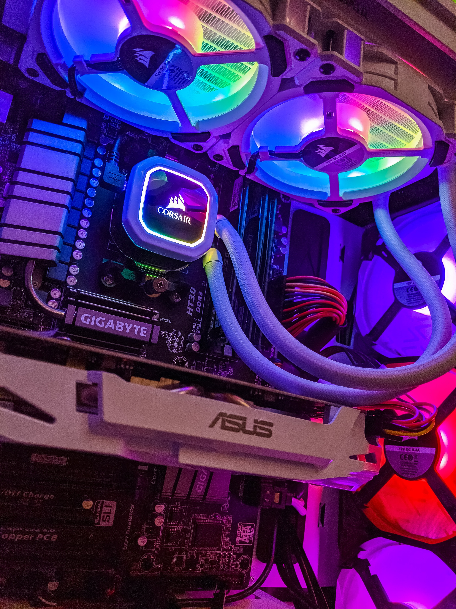
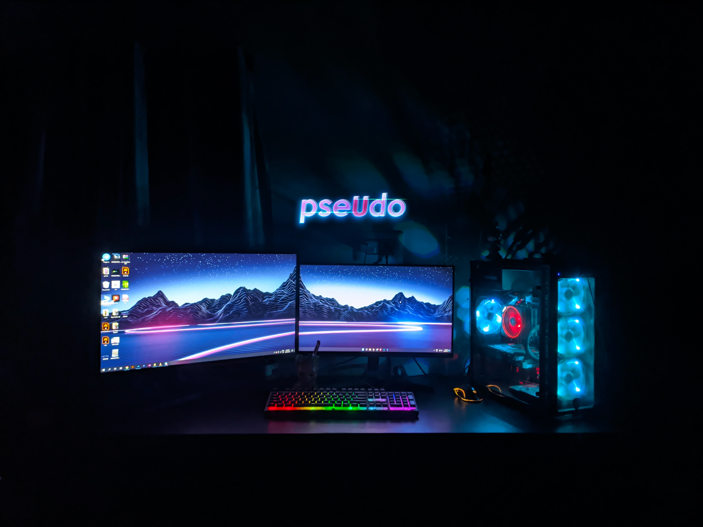

Media
Here is a short clip of me getting a pentakill in my favorite game League of Legends!
Enjoy one of the songs that I listen to when I'm gaming!
Why would you want to build a PC?
Building computers can be one of the most satisfying and fulfilling accomplishments that one can achieve. In this day and age where technology is always evolving, building yourself a computer can save you both time and money. here are some of the benefits you can expect from building your first computer.
- A high-performance computer for a lower cost
- Interchangeable PC parts to keep your computer relevant
- Overall Longevity of your PC's lifespan
- Lights... very awesome, cool, glowy lights
Just to name a few.
Now you might be thinking, lights? who the heck cares about lights? Well, I was just kidding about the lights part. The truth is you don't need them... but you should get them anyway because they make your computer look like a spaceship and let's be honest. Everyone loves spaceships!
Seriously though, maybe you've found yourself wondering why you're unable to play the new game that was just released because the screen keeps stuttering. Maybe your favorite game keeps crashing and shutting down when you fight the first boss. Maybe your computer runs extremely slow every time you try to launch Microsoft Word, Google Chrome, and your antivirus at the same time. or maybe your computer runs hot enough to bake grandma's pot roast for dinner tomorrow. Building a PC can help solve many of these problems so you can focus on what truly matters to you.

Now don't get me wrong. Just because you are building a computer doesn't mean it needs to be a high-end gaming rig. you can build a computer to meet your personal needs. best of all it's not too hard to get started. Here at My First PC, we want to make your PC building experience as seamless as possible.
How can I get started?
I've put together a couple of websites to help you decide on the PC parts you'll need to get your computer up and running!
Below I've listed the required components you'll need for your computer, as well as some quality components that may make your life a little easier!
Required PC Parts:
- Tower/Case
- Motherboard
- CPU Processor
- GPU Graphics Card
- Ram Memory
- Storage (HD or SSD)
- PSU (Power Supply Unit)
- Case Cooling Fans (The light up ones :D)
- Monitor, Mouse, and Keyboard
Tower/Case
The Tower is the casing that you'll need to house all of your computer components the prices vary from anywhere as low as $30 to $150+. The case that you choose can affect how cool your computer runs during high and low load times. you can save money on this part but I wouldn't recommend going too cheap. I find that the saying "You get what you pay for" goes a long way in the technology industry.
Motherboard
Next, you'll need a Motherboard. Motherboards connect all your computer components together. they help each individual part communicate with one another. when you first install the motherboard into the case and start plugging computer components into the motherboard, it should remind you of legos. just be sure you handle it with care as they can be sensitive to damage.
CPU Processor
Now onto the famous Processor. if computers were people, you could think of the CPU as the brain. The processor communicates and interacts with all the different hardware components you install in your computer, as well as runs necessary processes that create the beautiful user interface, and interactability that computers are known for. without the processor, there is no Windows Operating System, no video games, no Google Chrome, nothing! The Processors I recommend are going to be an Intel Processor or an AMD Processor. I will also note that I typically match my Intel CPU with an Nvidia GPU, or AMD CPU, with an AMD GPU.
GPU Graphics Card
Now comes my favorite, the GPU! for the most part, you have two major options
to choose from. Nvidia graphics card, or
AMD graphics card. graphic cards are
used for anything that requires heavy graphics rendering. great for your
gamers, graphic designers, and video editors. Installing one of these bad boys
is sure to make your friends jealous! you could even mine some bitcoin with
it if you're feeling nerdy.
Note: I recommend that you pair your AMD CPU with AMD GPU and Intel CPU
with Nvidia GPU.
RAM Memory
RAM or Random Access Memory is another important component you'll need to install. Don't worry, this one is pretty easy. RAM is the memory that is flexible and could be used by programs to perform quick data changes that your programs need to run smoothly. if you want to multi-task and have tons of internet windows open while running your favorite video game, while simultaneously referencing with a 3rd party software your RAM is how you want to do it. RAM Typically comes with memory sizes of 8GB, 16GB, or 32GB. if you're not a big gamer I'd recommend 16GB max. However, if you love Playing Red Dead Redemption, watching your favorite live stream on twitch, and referencing Game Faq walkthrough on Google Chrome all at the same time. I'd recommend 16GB minimum.
Storage
Your storage is where all the files, programs, and documents you download and install are stored. including the operating system (Windows, Linux). For your storage, you also have 2 options to choose from. HDD (Hard Drive), and SSD (Solid State Drive) . The HHD is the older type of memory storage and is typically slower, but is still purchased due to its large storage capacity. The SSD is the newer much faster brother of the HDD and comes with a higher cost, and for good reason. with one of these SSD bad boys installed in your PC, you can expect your computer to go from being completely off to the desktop home screen and ready for use in literal seconds. now that's fast. If you can afford it I definitely recommend the SSD, but it's not necessary if you're trying to save money. Although, I would consider cutting costs from a different component.
PSU
Next on the list is the Power Supply Unit. This one is a little tricky because every power supply offers different voltages, and every computer depending on the hardware you install requires different amounts of power. For this guide I won't go in-depth regarding this. but if you find yourself in a PC hardware store like microcenter, I definitely recommend that you speak with one of there PC part specialist for further assistance. with that being said, PSU's usually have a grading on their efficiency, which could be Bronze, Silver, Gold, or Platinum. If you're trying to save money, there's nothing wrong with the Bronze efficiency PSU, but you want to make sure that it provides enough voltage to effectively power your PC components. Especially your GPU, CPU, and Motherboard.
Case Cooling Fans
You knew it was coming, the glowy light-up fans! the fans don't really need to light up. Most PC builders buy them because they like the aesthetic, but plain non-light-up fans do the trick just as good. Fans provide airflow for Your PC to help keep everything running as cool as possible. installing these is pretty easy, you'll want to make sure the size of the fans matches the size of your case. going to a computer part store like microcenter can help you size up the fans to the case. Just make sure you get the Light-up ones :).
Monitor, Mouse, and Keyboard
For this part, you may already have a monitor, mouse, or keyboard. If you do, that's fine but if you're missing any of these, make sure you run and pick one up before you finish building your PC.
Operating System
Windows is constantly putting out Operating systems. if you already own a transferrable Windows operating system from an old PC you're getting rid of, then you don't need to buy one, but if you're not particularly tech-savvy, then I'd consider buying a fresh edition. I won't go into detail about transferring your operating system from one computer to another, but just know that it's possible.
This concludes the information for the PC parts, We will be releasing further updates in the future, including a step-by-step guide on how to put everything together.
Help Our Cause!
We hope you found this website to be useful and if you would like to help us out, please consider donating via Paypal by clicking the image below. any amount helps, and is greatly appreciated.